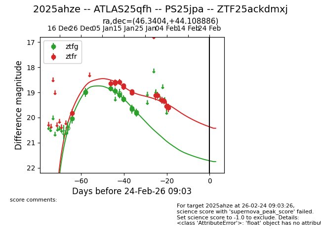
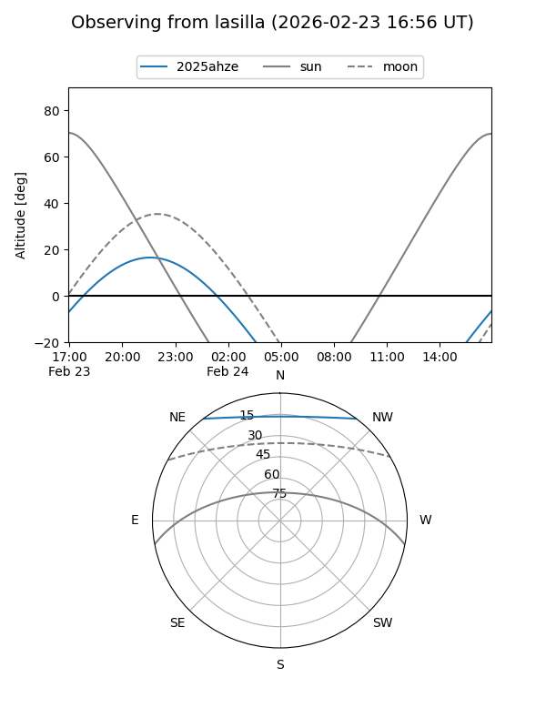
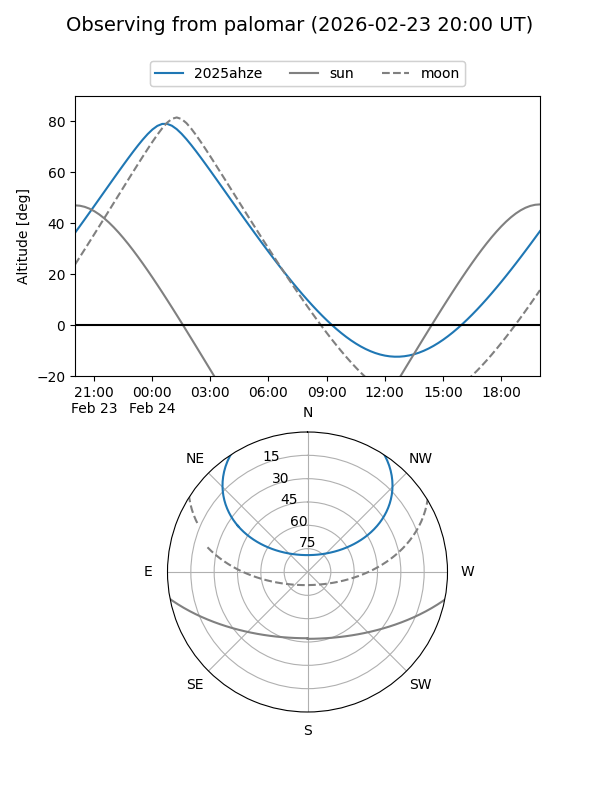
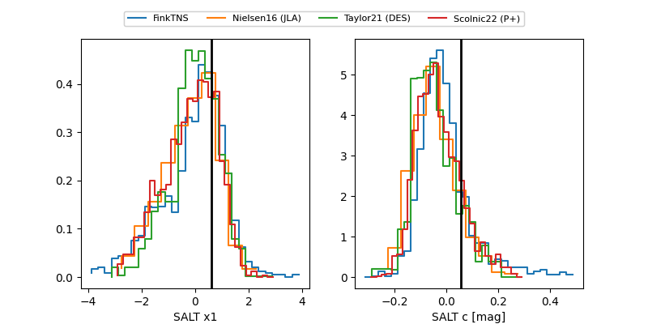

2025ahze
Target 2025ahze at 2026-01-10 10:36
Aliases and brokers:
FINK: link
Lasair: link
ALeRCE: link
TNS: link
YSE: link
alt names
ZTF25ackdmxj (ztf,fink_ztf)
2025ahze (tns,yse)
ATLAS25qfh (atlas)
PS25jpa (panstarrs)
Coordinates:
equatorial (ra, dec) = 46.3404,+44.10889
equatorial (HMS+DMS) = 03:05:21.69,+44:06:31.99
galactic (l, b) = (146.8633,-12.45179)
Flags:
Photometry:
last ztfg=18.84, ztfr=18.65
4 ztfg, 2 ztfr detections
Lightcurve

Visibility


Additional plots
